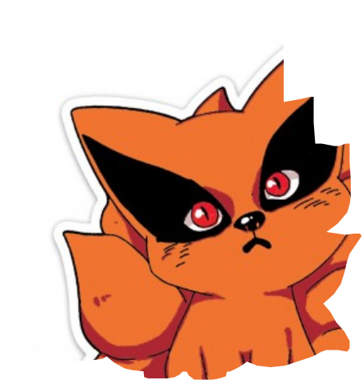
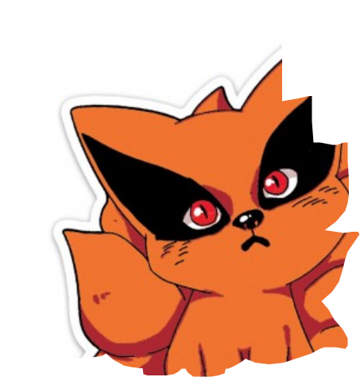

Naruto
Naruto é uma série de mangá japonesa
escrita e ilustrada por Masashi Kishimoto.
Fatos e Curiosidades
1. Naruto foi criado na infância do Masashi Kishimoto
2. Naruto e outros personagens são dublados por mulheres
3. A roupa do Naruto é inspirado no uniforme do Goku de Dragon Ball Z
4. A palavra dattebayo não existe uma tradução literal, mas ela quer expressar e afirmar que o personagem está certo.